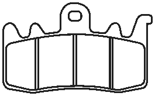

Specifications
General Specifications
Service Data

FA63085 × 50.5 × 8 mm FA21378 × 41.5 × 9 mm
FA21378 × 41.5 × 9 mmEBC shape badges show the actual pad diagram, code and published dimensions. Diagrams reproduced with written permission from EBC.
Torque Specifications
Service-manual reference values. Torque figures can vary by model year, market and fastener condition — confirm against the workshop manual.
| Component | Torque | Notes |
|---|---|---|
| Oil drain plug | 20 Nm | Replace crush washer |
| Front axle nut | 63 Nm | — |
| Rear axle nut | 63 Nm | — |
| Front brake caliper bolts | 30 Nm | — |
| Spark plugs | 14 Nm | — |
Frequently Asked Questions
How much horsepower (BHP) does the Scrambler Full Throttle make?
The Ducati Scrambler Full Throttle is rated at 73 hp (54 kW) @ 8,250 rpm.
What is the torque of the Ducati Scrambler Full Throttle?
Manufacturer-claimed peak torque is 65 Nm @ 7,000 rpm.
What is the engine displacement of the Ducati Scrambler Full Throttle?
The Ducati Scrambler Full Throttle is listed with a 803 cc engine.
What is the seat height of the Ducati Scrambler Full Throttle?
The seat height is listed as 795 mm. Seat width and suspension sag also affect reach.
How much does the Ducati Scrambler Full Throttle weigh?
The kerb weight is listed as 196 kg.
What is the power-to-weight ratio of the Ducati Scrambler Full Throttle?
Using the listed 73 hp (54 kW) and 196 kg, the calculated ratio is about 372 hp per tonne (0.28 kW/kg).
Is the Ducati Scrambler Full Throttle suitable for beginners?
It falls outside the site's beginner shortlist criteria: 73 hp (54 kW) @ 8,250 rpm is above the 50 hp limit. The criteria are 50 hp or less, 200 kg or less, an 800 mm seat or lower, and a non-sport, non-competition category.
Is the Ducati Scrambler Full Throttle A2-legal?
On the listed figures it exceeds the European A2 limits: about 54.4 kW and 0.28 kW/kg (limits: 35 kW and 0.2 kW/kg). A restricted version may be available; check local approval.
Is the Ducati Scrambler Full Throttle suitable for shorter riders?
The seat is listed at 795 mm, which is moderate by the site's seat-height bands (760 mm or lower low, 761–800 mm moderate, 801–830 mm tall, above 830 mm very tall). Seat width, suspension sag and rider inseam also affect reach.
What is the fuel capacity of the Ducati Scrambler Full Throttle?
Fuel capacity is listed as 13.5 L.
What tyres does the Scrambler Full Throttle use?
Tyre sizes are listed as 110/80-18 front, 180/55-17 rear.
Does the Ducati Scrambler Full Throttle have ABS?
The Ducati Scrambler Full Throttle is listed with Cornering ABS.
What suspension does the Ducati Scrambler Full Throttle use?
Front: 41 mm inverted fork. Rear: Single shock.
What brakes does the Ducati Scrambler Full Throttle use?
Front: 330 mm disc, radial 4-piston caliper. Rear: 245 mm disc.
What brake pads does the Scrambler Full Throttle use?
Front: EBC FA630HH · SBS 900 · Brembo 07BB38 · Vesrah VD-9070. Rear: EBC FA213 · Brembo 07BB02. These are pad-shape references; confirm the compound and exact model year before ordering.
What chain does the Scrambler Full Throttle use?
The listed chain or final drive is 525 O-ring, 112 links. Confirm the pitch, link count and adjustment procedure for your model year.
What is the engine oil capacity of the Ducati Scrambler Full Throttle?
Engine oil capacity is 3.6 L (3.8 US qt) and the recommended grade is SAE 15W-50, JASO MA2. Confirm the exact fill procedure in the owner's or workshop manual.
Specifications are manufacturer-claimed and can vary by model year and market. Confirm service limits and torque values against the owner's or workshop manual. Data updated 2026-11-22.